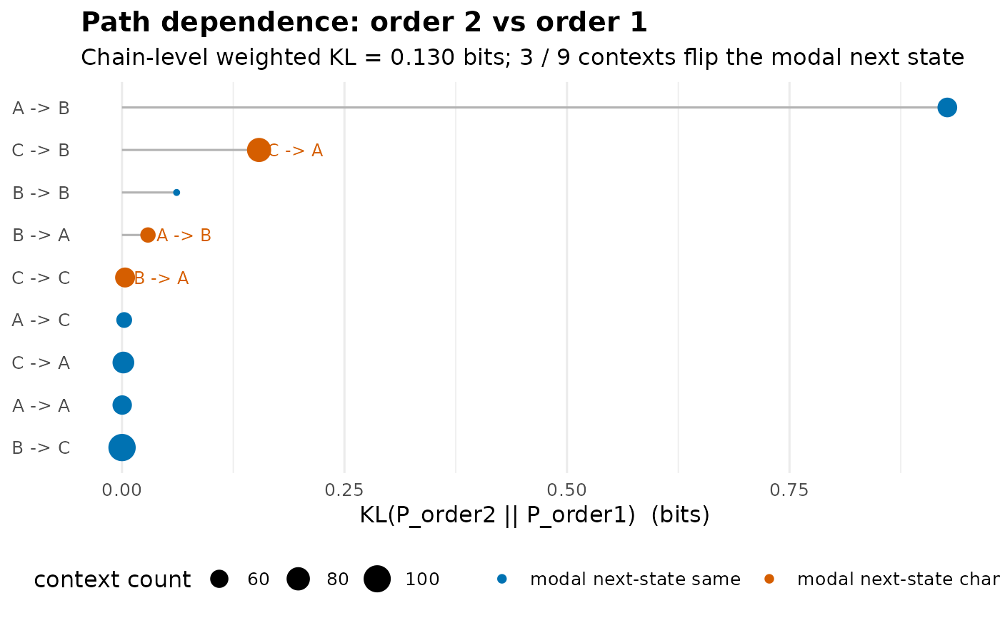

Diagnoses where a chain's order-1 Markov assumption fails by comparing, for each order-k context \((s_1, \ldots, s_{k-1})\), the empirical next-state distribution \(P(s_k \mid s_1, \ldots, s_{k-1})\) against the order-1 prediction \(P(s_k \mid s_{k-1})\) that uses only the most recent state. Returns a tidy per-context table sorted by Kullback-Leibler divergence so the analyst can see exactly which histories carry extra predictive information.
path_dependence(x, order = 2L, min_count = 5L, base = 2)A wide sequence data.frame / matrix (rows = actors, columns =
time-steps), or a netobject that carries the source data.
Integer. Order of the conditioning context. order = 2
(default) compares 2-step memory against 1-step; order = 3
compares 3-step memory; etc. Must be a whole number; a non-integer
value is an error rather than being silently truncated.
Integer. Drop contexts seen fewer than this many times. Default 5. Very small samples produce noisy KL estimates.
Numeric. Logarithm base for entropy and KL. Default 2 (bits).
An object of class "net_path_dependence" with
tidy data.frame, one row per order-k context, sorted
by KL descending. Columns: context (e.g. "A -> B"), n
(count), H_order1 (entropy of \(P(\cdot \mid s_{k-1})\)),
H_orderk (entropy of \(P(\cdot \mid \mathrm{context})\)),
H_drop (= H_order1 - H_orderk), KL
(= \(D_{KL}(P_k \| P_1)\)), top_o1 (most likely next state
under order-1), top_ok (most likely next state under order-k),
flips (logical: did the most likely next state change?).
list with chain-level summaries: KL_weighted
(count-weighted mean KL across contexts), H_drop_weighted
(count-weighted mean entropy drop), n_contexts, n_flips
(contexts where the most-likely next state changed).
integer
numeric
integer
character vector
For each context \(c = (s_1, \ldots, s_{k-1})\) occurring at least
min_count times, the function computes:
the empirical conditional \(P_k(\cdot \mid c)\) from k-gram counts;
the order-1 prediction \(P_1(\cdot \mid s_{k-1})\) from the most recent state alone (the bigram-marginal estimator);
the entropy drop \(H(P_1) - H(P_k)\) - bits of uncertainty removed by extending memory by one step in this specific context;
the Kullback-Leibler divergence \(D_{KL}(P_k \,\|\, P_1)\) - bits of "surprise" if you used the order-1 model when the order-k model is true.
KL = 0 means longer history adds no information for that context.
H_drop > 0 means longer history sharpens the prediction;
H_drop < 0 indicates the order-k context happens to spread
probability across more outcomes than order-1 alone (small-sample noise
or genuine context-induced uncertainty - inspect n).
Contexts where flips = TRUE are the substantively interesting
ones: the longer history changes the modal prediction, not just its
confidence.
Pair this with markov_order_test (which decides whether
order-k is needed globally) to see the chain-level decision broken
down per context.
Cover, T.M. & Thomas, J.A. (2006). Elements of Information Theory, 2nd ed., chapters 2 and 4. Wiley. (KL divergence and conditional entropy.)
# \donttest{
# Sequences with a genuine order-2 rule: A then B is always followed by C
set.seed(7)
seqs <- t(replicate(60, {
s <- character(12)
s[1:2] <- sample(c("A", "B", "C"), 2, replace = TRUE)
for (j in 3:12) {
s[j] <- if (s[j - 2] == "A" && s[j - 1] == "B") "C"
else sample(c("A", "B", "C"), 1)
}
s
}))
pd <- path_dependence(as.data.frame(seqs), order = 2, min_count = 3)
print(pd)
#> Path Dependence (order 2 vs order 1, bits)
#>
#> Contexts: 9 (min_count = 3). Modal-prediction flips: 3.
#> Chain-level KL_weighted = 0.130 bits
#> Chain-level H_drop_weighted = 0.139 bits
#>
#> Top 9 contexts by KL:
#> context n H_order1 H_orderk H_drop KL top_o1 top_ok flips
#> A -> B 65 1.468 0.000 1.468 0.927 C C FALSE
#> C -> B 84 1.468 1.577 -0.109 0.154 C A TRUE
#> B -> B 42 1.468 1.575 -0.107 0.061 C C FALSE
#> B -> A 52 1.578 1.558 0.020 0.029 A B TRUE
#> C -> C 66 1.580 1.578 0.002 0.004 B A TRUE
#> A -> C 53 1.580 1.571 0.009 0.003 B B FALSE
#> C -> A 73 1.578 1.580 -0.002 0.002 A A FALSE
#> A -> A 64 1.578 1.580 -0.002 0.000 A A FALSE
#> B -> C 101 1.580 1.581 -0.001 0.000 B B FALSE
summary(pd)
#> Path Dependence Summary (order 2 vs order 1, bits)
#>
#> All 9 contexts (sorted by KL):
#> context n H_order1 H_orderk H_drop KL top_o1 top_ok flips
#> A -> B 65 1.468 0.000 1.468 0.927 C C FALSE
#> C -> B 84 1.468 1.577 -0.109 0.154 C A TRUE
#> B -> B 42 1.468 1.575 -0.107 0.061 C C FALSE
#> B -> A 52 1.578 1.558 0.020 0.029 A B TRUE
#> C -> C 66 1.580 1.578 0.002 0.004 B A TRUE
#> A -> C 53 1.580 1.571 0.009 0.003 B B FALSE
#> C -> A 73 1.578 1.580 -0.002 0.002 A A FALSE
#> A -> A 64 1.578 1.580 -0.002 0.000 A A FALSE
#> B -> C 101 1.580 1.581 -0.001 0.000 B B FALSE
#>
#> Chain-level:
#> KL_weighted H_drop_weighted n_contexts n_flips
#> 0.13 0.139 9 3
plot(pd)

# }